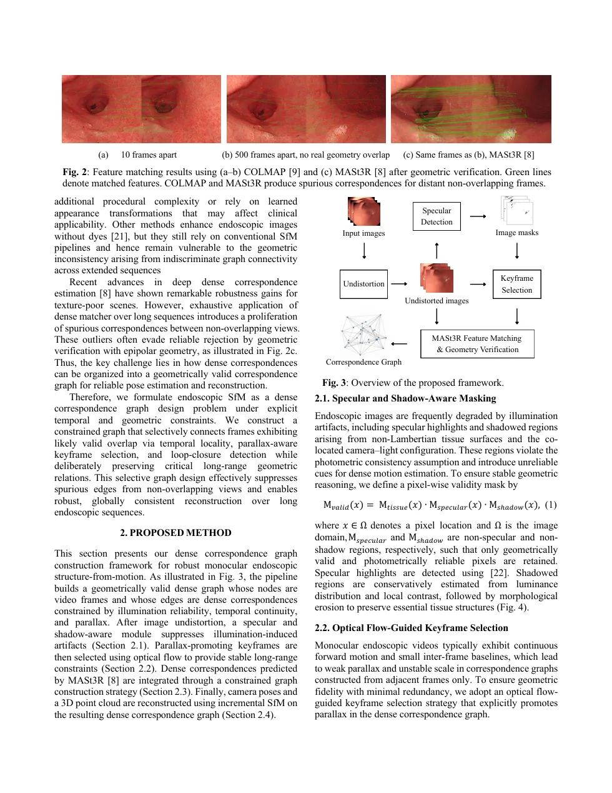
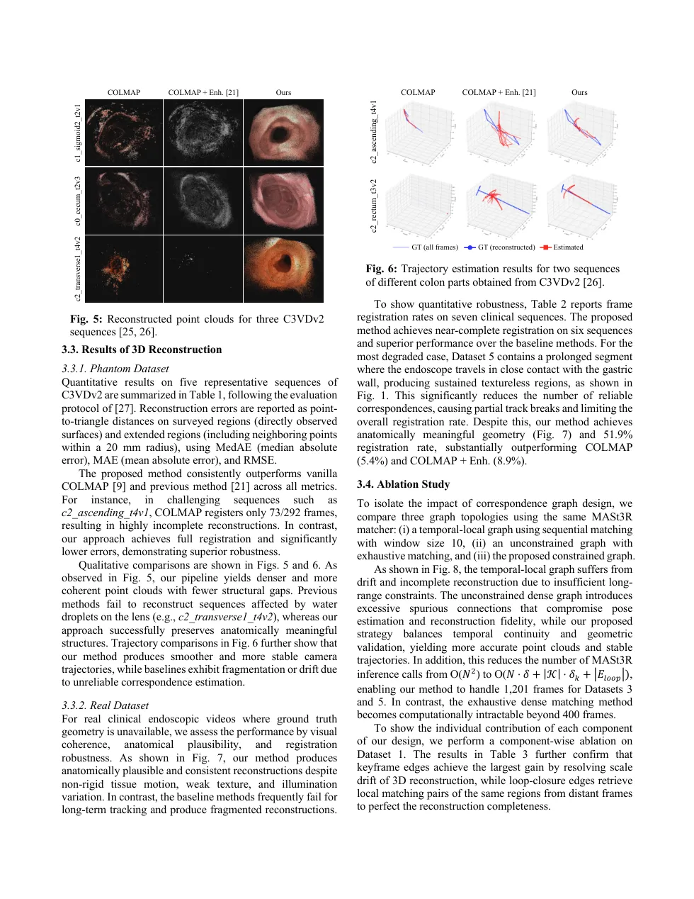

Abstract
Reconstructing complete 3D geometry from monocular clinical endoscopic videos is challenging due to weak texture, repetitive tissue patterns, and severe illumination artifacts. Although emerging dense matching methods exhibit improved resilience to textureless regions, they often produce abundant spurious correspondences across non-overlapping views, which corrupts the correspondence graph and causes structure-from-motion (SfM) pipelines to fail. We propose a framework for constructing a dense correspondence graph that leverages explicit temporal locality, parallax-driven geometric constraints, and loop-closure revisiting to enable reliable SfM for monocular endoscopic videos. Combined with illumination-aware masking and SfM initialization adapted to endoscopy, the method improves registration robustness and reconstruction completeness on phantom and clinical datasets.
Overview video
A 38-second walkthrough of the problem, constrained graph, C3VDv2 result, and a reconstructed point cloud (aligned to dataset GT for the interactive viewer).
Method
After undistortion, specular and shadow-aware masking retains photometrically reliable pixels. Optical-flow keyframes (RAFT) promote parallax. Dense matches from MASt3R are admitted only along a constrained graph: local temporal edges Elocal, keyframe edges Ekeyframe, and CosPlace loop edges Eloop. Incremental COLMAP SfM with a relaxed triangulation angle then recovers poses and a point cloud.

Interactive reconstructions
Drag to orbit, pinch or scroll to zoom. Ours is the SfM point cloud from constrained dense matching. Ground truth is the dataset mesh, Sim(3)+ICP aligned to our SfM cloud for visualization (not an output of this paper).
Quantitative results
Point-to-triangle errors on C3VDv2 (MedAE / MAE / RMSE, mm). N is the number of input frames. Extended (Ext.) uses a 20 mm neighborhood around surveyed surfaces (Sur.).
| Method | c0_cecum_t2v3 (N=595) |
c1_sigmoid2_t2v1 (N=400) |
c1_transverse2_t1v3 (N=517) |
c2_ascending_t4v1 (N=292) |
c2_transverse1_t4v2 (N=382) |
|---|---|---|---|---|---|
| Ext. COLMAP | 7.93 / 9.28 / 10.79 | 5.57 / 7.90 / 13.14 | 4.24 / 6.12 / 11.67 | 10.88 / 11.32 / 12.02 | 6.01 / 8.76 / 29.51 |
| Ext. COLMAP + Enh. | 8.02 / 8.85 / 10.74 | 5.46 / 7.64 / 15.08 | 3.90 / 6.36 / 11.34 | 8.66 / 10.17 / 15.36 | 14.76 / 15.08 / 18.40 |
| Ext. Ours | 7.90 / 8.41 / 9.68 | 5.21 / 6.44 / 8.21 | 4.01 / 6.00 / 8.54 | 8.65 / 8.79 / 10.05 | 6.77 / 8.18 / 10.80 |
Ablation on graph topology (Dataset 1, N=601), registration rate:
| E local | E keyframe | E loop | Registration |
|---|---|---|---|
| ✓ | 2.2% | ||
| ✓ | ✓ | 98.5% | |
| ✓ | ✓ | ✓ | 99.7% |

Citation
@inproceedings{lin2026endocdcg,
title = {Constrained Dense Correspondence Graphs for Robust Structure-from-Motion Targeting Endoscopic Videos},
author = {Lin, Yu-Chun and Han, Ming-Lun and Yen, Kuang-Chen and Chen, Homer H.},
booktitle = {IEEE International Conference on Image Processing (ICIP)},
year = {2026}
}
Acknowledgements
Supported by NTU (114L9009) and NSTC (113-2222-E-002-003-MY3). Clinical data collection was approved by the IRB of National Taiwan University Hospital (No. 202407132RINC). Interactive 3D on this page uses public phantom / simulated datasets only (C3VDv2 and VR-CAPS).
Datasets and related work
Datasets
- T. L. Bobrow, M. Golhar, R. Vijayan, V. S. Akshintala, J. R. Garcia, and N. J. Durr, “Colonoscopy 3D video dataset with paired depth from 2D-3D registration,” Medical Image Analysis, vol. 90, p. 102956, 2023. (C3VD)
- M. V. Golhar, L. S. G. Fretes, L. Ayers, V. S. Akshintala, T. L. Bobrow, and N. J. Durr, “C3VDv2: Colonoscopy 3D video dataset with enhanced realism,” arXiv:2506.24074, 2025. (C3VDv2)
- K. Incetan, I. O. Celik, A. Obeid, N. I. Gokceler, K. Ozyoruk, Y. Almalioglu, R. J. Chen, N. I. Mahmood, H. Gilbert, N. J. Durr, and M. Turan, “VR-Caps: A virtual environment for capsule endoscopy,” Medical Image Analysis, vol. 70, p. 101990, 2021. (VR-CAPS)
- P. Azagra, C. Sostres, Á. Ferrández, L. Riazuelo, C. Tomasini, A. L. Barbed, J. Morlana, D. Recasens, V. M. Batlle, J. J. Gómez-Rodríguez, R. P. Pueyo, J. Civera, J. D. Tardós, A. C. Murillo, A. Lanas, and J. M. M. Montiel, “EndoMapper dataset of complete calibrated endoscopy procedures,” Scientific Data, vol. 10, 2023. (EndoMapper)
Methods cited in the paper
- V. Leroy, Y. Cabon, and J. Revaud, “Grounding image matching in 3D with MASt3R,” in ECCV, 2024.
- J. L. Schönberger and J.-M. Frahm, “Structure-from-motion revisited,” in CVPR, 2016. (COLMAP)
- Z. Teed and J. Deng, “RAFT: Recurrent all-pairs field transforms for optical flow,” in ECCV, 2020.
- G. Berton, C. Masone, and B. Caputo, “Rethinking visual geo-localization for large-scale applications,” in CVPR, 2022. (CosPlace)
- T.-Y. Wei, M.-L. Han, W.-C. Liao, K.-C. Yen, S.-J. Chen, and H. H. Chen, “Endoscopic feature enhancement for stomach 3D reconstruction without dyeing,” in ICIP, 2023.
- O. el Meslouhi, M. Kardouchi, H. Allali, T. Gadi, and Y. Ait Benkaddour, “Automatic detection and inpainting of specular reflections for colposcopic images,” Open Computer Science, 2011.
- V. M. Batlle, J. M. M. Montiel, P. Fua, and J. D. Tardós, “LightNeuS: Neural surface reconstruction in endoscopy using illumination decline,” in MICCAI, 2023.